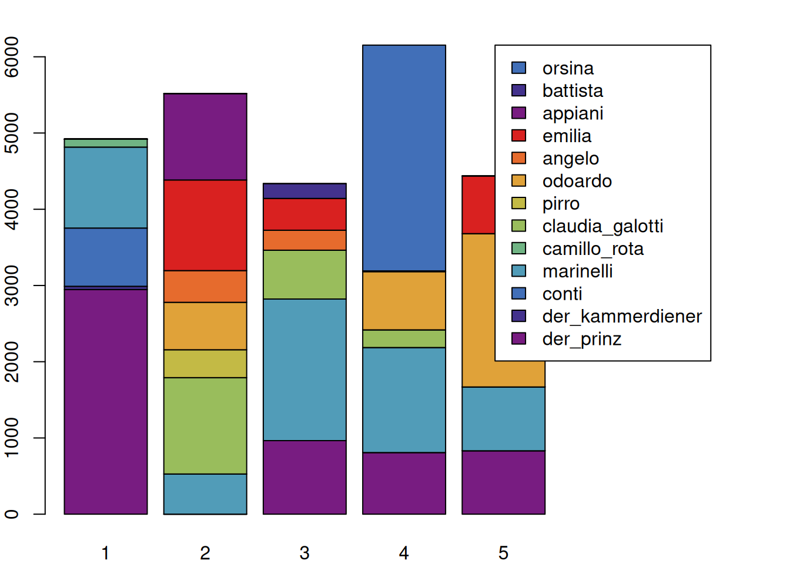
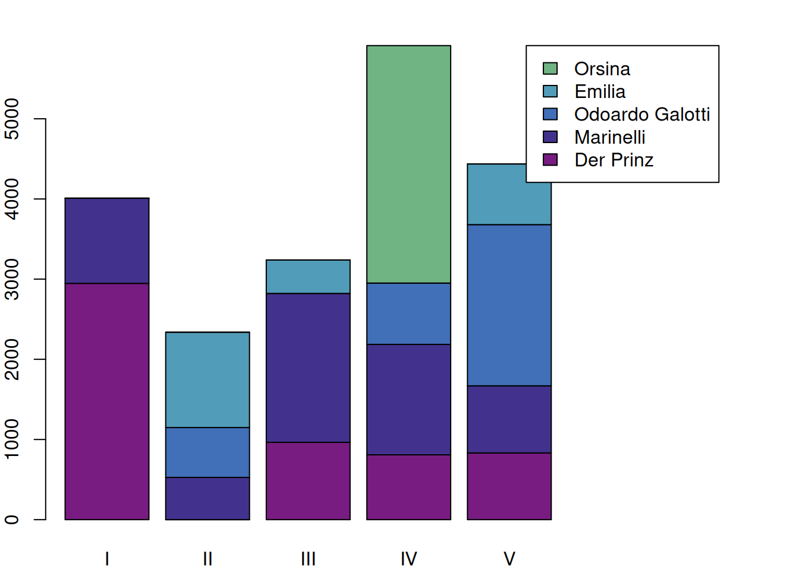
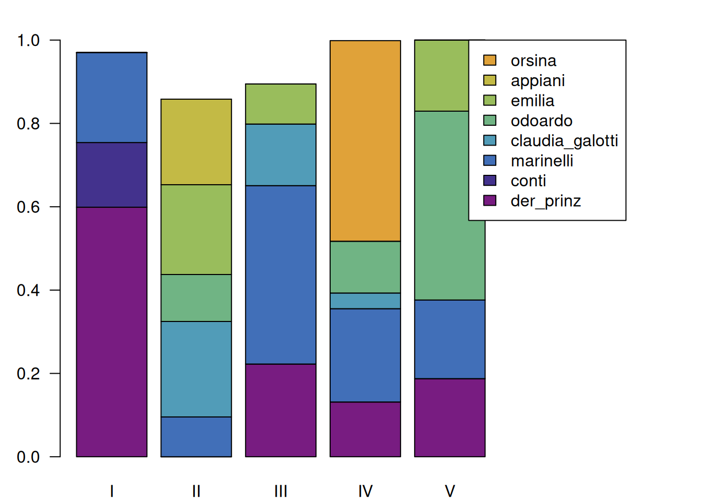
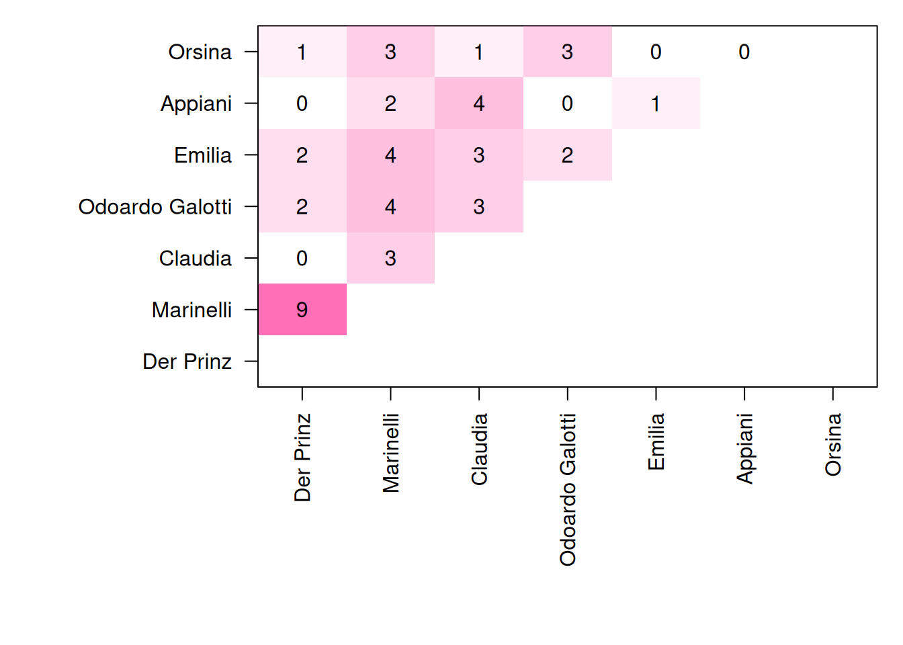
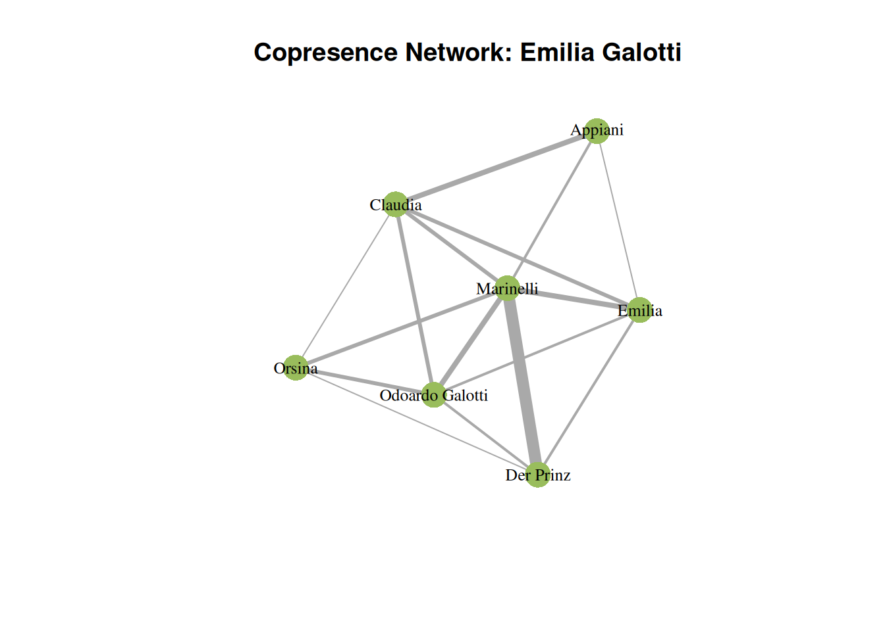

8 Configuration
This section does not refer to the configuration of the R-package, but to the literary analysis concept configuration matrix (Pfister 1988).
8.1 Matrices
Configuration matrices can be extracted with the function configuration(). As usual, entering ?configuration provies more detailed information about the options the function provides. This function can only deal with a single play at a time, but using lappy(), we can call it for many plays quickly (this the same we did with the function utteranceStatistics() above).
configuration(rksp.0)## corpus drama character 1 2 3 4 5
## 1 test rksp.0 der_prinz 2947 0 965 809 832
## 2 test rksp.0 der_kammerdiener 42 0 0 0 0
## 3 test rksp.0 conti 764 0 0 0 0
## 4 test rksp.0 marinelli 1062 527 1857 1377 837
## 5 test rksp.0 camillo_rota 106 0 0 0 0
## 6 test rksp.0 claudia_galotti 0 1264 641 232 0
## 7 test rksp.0 pirro 0 366 0 0 0
## 8 test rksp.0 odoardo 0 622 0 765 2011
## 9 test rksp.0 angelo 0 416 262 0 0
## 10 test rksp.0 emilia 0 1189 417 0 757
## 11 test rksp.0 appiani 0 1133 0 0 0
## 16 test rksp.0 battista 0 0 195 8 0
## 22 test rksp.0 orsina 0 0 0 2962 0This creates a basic configuration matrix, but instead of just containing the presence or absence of a figure, it contains the number of spoken tokens for each act for each character. This information is in fact similar to what we can extract with characterStatistics(rksp.0, segment="Act"), but in a different form and structure. The above table contains a lot of information that can be visualised.
We first need to extract the numeric content from the above table. This can easily be done with the function as.matrix() (this will, in detail, be rerouted to the function as.matrix.QDConfiguration(), which knows what part of the table needs to be in the matrix). A matrix containing only numbers can easily be plotted using the regular barplot() function, as shown below.
c <- configuration(rksp.0)
mat <- as.matrix(c)
par(mar=c(2,2,2,10))
barplot(mat,
legend.text = c$character, # legend text
args.legend = list(x=ncol(mat)+3, # legend x position
y=max(colSums(mat)) # legend y pos
),
col=qd.colors)
8.1.1 Filtering unimportant characters
This is informative, but doesn’t look very nice and some colors are difficult to associate with characters because colors are repeating. We will therefore use the function filterCharacters(), which is very similar to characterNames(): It can be applied to any object of the type QDHasCharacter and removes rows according to certain criteria. In this case, we filter every character except the five most talkative ones. As usual, see ?filterCharacters to see other options.
c <- configuration(rksp.0) %>%
filterCharacters(rksp.0, n = 5) %>%
characterNames(rksp.0)
mat <- as.matrix(c)
par(mar=c(2,2,2,10))
barplot(mat,
names.arg = as.roman(1:ncol(mat)), # roman act numbers
legend.text = c$character, # legend text
args.legend = list(x=ncol(mat)+3, # legend x position
y=max(colSums(mat)) # legend y pos
),
col=qd.colors)
Of course, the speech of characters that do not speak often is now removed, leaving only a portion of each act covered in the plot.
8.1.2 Normalization
Since each act has a different length, it is often useful to normalize each block, according to the total number of spoken tokens. This way, we can display the relative active presence of each character in each act. In combination with the filtering we did before, however, we need to be careful: If we scale with the filtered matrix, the resulting values do not reflect the portion of the speech in the scene, but only to the top 8 characters. This way, one would get the impression that the filtered characters’ speeches add up to 100% of a segment, which is not the case. The following snippet shows how to scale using the original matrix, but still only include the top eight characters into the matrix.
c <- configuration(rksp.0) # getting the full configuration (with all characters)
mat_orig <- as.matrix(c) # extracting the matrix
c_filtered <- c %>% filterCharacters(rksp.0,n = 8) # filtering, so that only the top 8 characters remain
mat_filtered <- as.matrix(c_filtered) # extracting the filtered matrix
# scaling, using values from the unfiltered matrix
mat <- scale(mat_filtered,
center=FALSE,
scale=colSums(mat_orig))
# plot, as above
par(mar=c(2,3,2,10))
barplot(mat,
names.arg = as.roman(1:ncol(mat)), # roman act numbers
# legend
legend.text=c_filtered$character, # set legend text
args.legend = list(x=ncol(mat)+3, # legend x position
y=max(colSums(mat)) # legend y pos
),
# visual
las=1, # rotate labels on y axis
col=qd.colors # provide colors
)
8.2 Copresence
Configuration matrices are also often used to get an overview of who is copresent on stage. This can also be achieved using the function configuration(). First, we create a configuration matrix that only represents presence or absence of a figure (and we switch to scenes). Obviously, the resulting matrix has many more columns, we include only the first 10 below.
configuration(rksp.0, onlyPresence = TRUE, segment="Scene")## corpus drama character 1 2 3 4 5 6 7
## 1 test rksp.0 der_prinz TRUE TRUE TRUE TRUE TRUE TRUE TRUE
## 2 test rksp.0 der_kammerdiener TRUE FALSE FALSE FALSE FALSE FALSE TRUE
## 4 test rksp.0 conti FALSE TRUE FALSE TRUE FALSE FALSE FALSE
## 9 test rksp.0 marinelli FALSE FALSE FALSE FALSE FALSE TRUE FALSE
## 14 test rksp.0 camillo_rota FALSE FALSE FALSE FALSE FALSE FALSE FALSE
## 15 test rksp.0 claudia_galotti FALSE FALSE FALSE FALSE FALSE FALSE FALSE
## 16 test rksp.0 pirro FALSE FALSE FALSE FALSE FALSE FALSE FALSE
## 17 test rksp.0 odoardo FALSE FALSE FALSE FALSE FALSE FALSE FALSE
## 20 test rksp.0 angelo FALSE FALSE FALSE FALSE FALSE FALSE FALSE
## 25 test rksp.0 emilia FALSE FALSE FALSE FALSE FALSE FALSE FALSE
## 27 test rksp.0 appiani FALSE FALSE FALSE FALSE FALSE FALSE FALSE
## 47 test rksp.0 battista FALSE FALSE FALSE FALSE FALSE FALSE FALSE
## 65 test rksp.0 orsina FALSE FALSE FALSE FALSE FALSE FALSE FALSECreating a co-occurrence matrix is a simple matter of matrix multiplication, and we already know how to create a matrix.
# extract the configuration
c <- configuration(rksp.0, onlyPresence = TRUE, segment="Scene")
# extract a matrix
mat <- as.matrix(c)
# multiply the matrix with its inverse
# this creates the copresence matrix
copresence <- mat %*% t(mat)
# add character names
rownames(copresence) <- c$character
colnames(copresence) <- c$character
copresence## der_prinz der_kammerdiener conti marinelli camillo_rota
## der_prinz 17 2 2 9 1
## der_kammerdiener 2 2 0 0 0
## conti 2 0 2 0 0
## marinelli 9 0 0 19 0
## camillo_rota 1 0 0 0 1
## claudia_galotti 0 0 0 3 0
## pirro 0 0 0 1 0
## odoardo 2 0 0 4 0
## angelo 0 0 0 1 0
## emilia 2 0 0 4 0
## appiani 0 0 0 2 0
## battista 1 0 0 3 0
## orsina 1 0 0 3 0
## claudia_galotti pirro odoardo angelo emilia appiani battista
## der_prinz 0 0 2 0 2 0 1
## der_kammerdiener 0 0 0 0 0 0 0
## conti 0 0 0 0 0 0 0
## marinelli 3 1 4 1 4 2 3
## camillo_rota 0 0 0 0 0 0 0
## claudia_galotti 13 3 3 0 3 4 2
## pirro 3 4 1 1 0 1 0
## odoardo 3 1 12 0 2 0 0
## angelo 0 1 0 2 0 0 0
## emilia 3 0 2 0 7 1 1
## appiani 4 1 0 0 1 5 0
## battista 2 0 0 0 1 0 4
## orsina 1 0 3 0 0 0 0
## orsina
## der_prinz 1
## der_kammerdiener 0
## conti 0
## marinelli 3
## camillo_rota 0
## claudia_galotti 1
## pirro 0
## odoardo 3
## angelo 0
## emilia 0
## appiani 0
## battista 0
## orsina 6The resulting copresence matrix shows the number of scenes in which two characters are both present. The diagonal shows the number of scenes in which a character is present in total (because each character is always copresent with itself, so to speak).
There are multiple ways to visualise this copresence. One option is a heat map, as shown below.
8.2.1 As Heatmap
The copresence can be visualised in a simple heat map. We first focus on the lower triangle and also remove the diagonal values. The actual plotting is a bit more complicated in this case, because we are just using the values in the copresence matrix as pixel intensities in the plot. Also, the axes need to be suppressed first, and can be added later with the proper names of the characters. If needed the code can also be used to include labels into the heat map.
c <- configuration(rksp.0, onlyPresence = TRUE, segment="Scene") %>%
filterCharacters(rksp.0, n = 7) %>%
characterNames(rksp.0)
# extract a matrix
mat <- as.matrix(c)
# multiply the matrix with its inverse
# this creates the copresence matrix
copresence <- mat %*% t(mat)
# add character names
rownames(copresence) <- c$character
colnames(copresence) <- c$character
# since it's a square matrix, we don't need the bottom right triangle
# and diagonales.
copresence[lower.tri(copresence,diag=TRUE)] <- NA
par(mar=c(10,10,1,1)) # plot margins
image(copresence,
col = rgb(256,111,184, alpha=(seq(0,255)),
maxColorValue = 256),
xaxt= "n", # no x axis
yaxt= "n", # no y axis
frame=TRUE # print a frame around the heatmap
)
# include values as labels
text(y=(rep(1:ncol(copresence), each=nrow(copresence))-1)/(nrow(copresence)-1),
x=(1:nrow(copresence)-1)/(nrow(copresence)-1),
labels=as.vector(copresence))
# add the x axis
axis(1, at = seq(0,1,length.out = length(c$character)), labels = c$character, las=3)
# add the y axis
axis(2, at = seq(0,1,length.out = length(c$character)), labels = c$character, las=1)
Apparently, Marinelli and the prince have the most shared scenes. Marinelli also shares a scene with most other figures (sum of the vertical bar: 16).
8.2.2 As Network
The same information can also be visualized as a copresence network. For this, we employ the R-package igraph. A nice introduction to igraph can be found in (Arnold and Tilton 2015), particularly for literary networks.
Technically, the matrix we created before is an adjacency matrix. It is therefore simple to convert it to a graph, and igraph offers the function graph_from_adjacency_matrix() for this.
c <- configuration(rksp.0, onlyPresence = TRUE, segment="Scene") %>%
filterCharacters(rksp.0, n = 7) %>%
characterNames(rksp.0)
# extract a matrix
mat <- as.matrix(c)
# multiply the matrix with its inverse
# this creates the copresence matrix
copresence <- mat %*% t(mat)
# add character names
rownames(copresence) <- c$character
colnames(copresence) <- c$character
# convert the adjacency matrix to a graph object
g <- igraph::graph_from_adjacency_matrix(copresence,
weighted=TRUE, # weighted graph
mode="undirected", # no direction
diag=FALSE # no looping edges
)Now the variable g holds the graph object. There are different things we can do with the graph. First, we can visualise it. igraph uses the same mechanism of R that we have used before for plotting, specifying a plot() function that can plot graph objects.
# Now we plot
plot(g,
layout=layout_with_gem, # how to lay out the graph
main="Copresence Network: Emilia Galotti", # title
vertex.label.cex=0.8, # label size
vertex.label.color="black", # font color
vertex.color=qd.colors[6], # vertex color
vertex.frame.color=NA, # no vertex border
edge.width=E(g)$weight # scale edges according to their weight
) 
8.2.3 Network properties
igraph offers a number of function to extract graph properties. We will show them below without explanation. The documentation of each function can be found here.
8.2.3.2 Average nearest neighbor degree
Function: knn()
knn(g)## $knn
## Der Prinz Marinelli Claudia Odoardo Galotti Emilia
## 5.571429 4.360000 4.571429 4.928571 5.000000
## Appiani Orsina
## 5.285714 5.250000
##
## $knnk
## [1] NaN NaN 5.285714 5.410714 4.833333 4.3600008.2.4 Graph Export
As a final step, one might want to further work on the graph using Gephi, or other tools. In order to do so, one can export the graph into an appropriate file:
igraph::write_graph(g,
"rksp.0.graphml", # specify the file name
format="graphml" # specify the file format
)This results in a file called rksp.0.graphml, that starts similarly as this:
<?xml version="1.0" encoding="UTF-8"?>
<graphml xmlns="http://graphml.graphdrawing.org/xmlns"
xmlns:xsi="http://www.w3.org/2001/XMLSchema-instance"
xsi:schemaLocation="http://graphml.graphdrawing.org/xmlns
http://graphml.graphdrawing.org/xmlns/1.0/graphml.xsd">
<!-- Created by igraph -->
<key id="v_name" for="node" attr.name="name" attr.type="string"/>
<key id="e_weight" for="edge" attr.name="weight" attr.type="double"/>
<graph id="G" edgedefault="undirected">
<node id="n0">
<data key="v_name">DER KAMMERDIENER</data>
</node>
<node id="n1">
<data key="v_name">DER PRINZ</data>
</node>
...This file can be opened with Gephi.